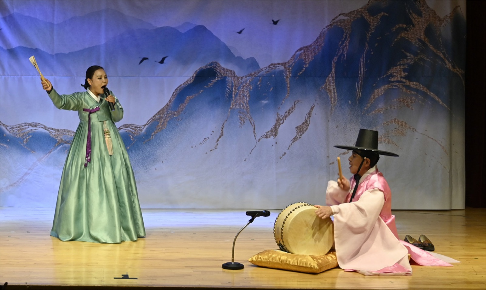

센트럴서울안과 개원 12주년을 맞이해 11월 18일 용산청소년센터 꿈이룸극장에서 ‘음악으로 그리는 눈부신 시선’이라는 주제로 국악 음악회를 열었다. 음악으로 우리 모두의 마음을 하나로 연결해 준 조경곤 고수의 이야기를 나눠본다.

고수, 명창의 소리를 이끄는 사람
김제 출신의 그는 인천광역시 무형문화재 23호 고법(鼓法) 예능 보유자이다. 고법이란 판소리에 맞춘 북 반주의 법례를 뜻한다. 고수는 노래 반주를 하는 보조자에 머무르지 않고, 명창이 실력을 발휘할 수 있도록 힘들 때 기운을 불어넣고 상황에 맞는 추임새와 연주로 노래가 극적으로 전달되도록 한다. 명창과 고수는 무대 위에서 서로 배려하며 감정을 나누는 꼭 필요한 존재다.
목숨과 바꾼 배움
북, 장구와 함께 50년 인생을 살아온 그는 시각장애인이다. 20대 후반 두 눈의 시력을 모두 잃었고, 그가 북을 배우겠다고 마음먹은 건 시력을 완전히 잃은 후였다. 소문난 소리꾼이었던 큰아버지 덕에 어릴 때부터 자연스럽게 국악에 끌렸지만 어른들은 만류했다. 그는 김제에서 만오천 원을 들고 서울로 향했다.
시각장애인을 제자로 받아주는 이는 한 곳도 없었고 모두 무모한 도전이라 했다. 국가무형문화재 제5호 예능 보유자인 김청만 명인은 달랐다. 마음대로 되지 않아 북을 여러 차례 버리기도 했고, 북을 배우러 가다가 전철 선로에 떨어져 죽을 고비도 넘겼다. 하루 10시간 이상 북과 장구를 치며 홀로 연습했다. 추운 겨울 건물 옥상에 올랐고, 인적 없는 산이 그에게 연습장이 되었다.
비장애인 고수는 소리꾼의 입 모양과 호흡을 눈으로 확인하면서 장단을 칠 수 있지만, 시각장애인에게는 쉽지 않은 일이다. 그가 할 수 있는 건 오로지 연습뿐이었다. 실습을 위해 명창을 모셔 오고, 소리를 해줄 명창이 있다면 어디든 달려갔다.
인천 최초 시각장애인 무형문화재
북을 시작한 지 10년, 고난과 어려움의 연속이었던 그 시간 끝에 2013년 판소리 고수 부문 무형문화재로 선정되었다. 인천 최초 시각장애인 무형문화재였다. 그리고 2019년 장구 문화재까지 선정되었다.
공연하며 느끼는 보람과 기쁨이 삶의 활력소가 된다는 그는, 센트럴서울안과 12주년 VIP 초청 음악회에서 전통음악, 판소리, 경서도민요, 한국 전통춤 등 다채로운 공연으로 우리 가락의 흥을 많은 이들과 나눴다. 북, 장구와 함께한 그의 인생이 더 빛나는 건, 누군가와 함께 호흡하며 보이지 않는 것에 더 집중하는 삶, 희망으로 만든 여정이기 때문 아닐까.